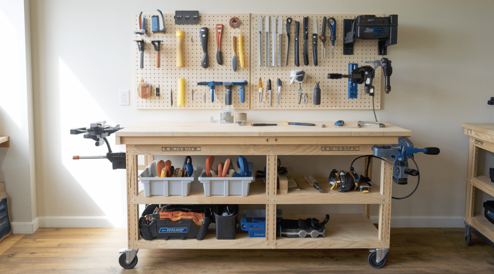
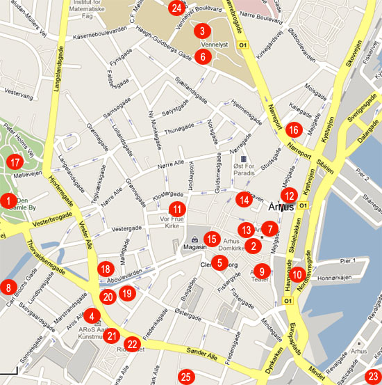

Repair Cafe Aarhus
Friendly space to repair electronics and textiles in Aarhus.
Specialisation: Electronics & Textiles
Location
Frederiks Allé 45, Aarhus
Schedule
Mon-Fri 10:00-18:00
Contact: supportaarhus@repaircafe.dk
Repair Cafe Aalborg
Community hub for fixing electronics and small appliances in Aalborg.
Specialisation: Electronics & Small Appliances
Location
Boulevarden 12, Aalborg
Schedule
Tue-Sat 11:00-17:00
Contact: supportaalborg@repaircafe.dk
Repair Cafe Odense
Helping locals fix textiles, bikes, and electronics in Odense.
Specialisation: Bicycles & Textiles
Location
Kongensgade 88, Odense
Schedule
Wed-Sun 12:00-18:00
Contact: supportodense@repaircafe.dk
Repair Cafe Esbjerg
A cozy repair space focusing on household items and furniture in Esbjerg.
Specialisation: Furniture & Household Items
Location
Torvegade 7, Esbjerg
Schedule
Sat-Sun 10:00-16:00
Contact: supportesbjerg@repaircafe.dk
Repair Cafe Randers
Volunteer-driven workshop for textiles and computers in Randers.
Specialisation: Computers & Textiles
Location
Østervold 21, Randers
Schedule
Mon-Fri 09:00-15:00
Contact: supportranders@repaircafe.dk
Repair Cafe Kolding
Helping the Kolding community repair electronics and bicycles.
Specialisation: Electronics & Bicycles
Location
Jernbanegade 9, Kolding
Schedule
Thu-Sat 11:00-17:00
Contact: supportkolding@repaircafe.dk
Repair Cafe Silkeborg
Repairing textiles and small electronics in the heart of Silkeborg.
Specialisation: Textiles & Small Electronics
Location
Vestergade 34, Silkeborg
Schedule
Mon-Wed 10:00-16:00
Contact: supportsilkeborg@repaircafe.dk
Repair Cafe Viborg
Volunteer-based repair café in Viborg focusing on bicycles and furniture.
Specialisation: Bicycles & Furniture
Location
Sct. Mathias Gade 22, Viborg
Schedule
Sat 09:00-14:00
Contact: supportviborg@repaircafe.dk
Repair Cafe Horsens
Repair Café Horsens helps with electronics and sewing projects.
Specialisation: Electronics & Sewing
Location
Søndergade 55, Horsens
Schedule
Fri-Sun 12:00-18:00
Contact: supporthorsens@repaircafe.dk
Repair Cafe Næstved
A repair space in Næstved focusing on household gadgets and textiles.
Specialisation: Household Gadgets & Textiles
Location
Ramsherred 3, Næstved
Schedule
Mon-Thu 10:00-15:00
Contact: supportnaestved@repaircafe.dk
Repair Cafe Roskilde
Repair Café Roskilde offers help with textiles, electronics, and small bikes.
Specialisation: Textiles, Electronics & Bicycles
Location
Algade 72, Roskilde
Schedule
Tue-Fri 11:00-17:00
Contact: supportroskilde@repaircafe.dk
Repair Cafe Hjørring
Repair Café Hjørring specializes in electronics and furniture.
Specialisation: Electronics & Furniture
Location
Springvandspladsen 5, Hjørring
Schedule
Sat-Sun 10:00-15:00
Contact: supporthjoerring@repaircafe.dk
Repair Cafe Skive
A place for Skive locals to repair appliances and bicycles.
Specialisation: Appliances & Bicycles
Location
Resenvej 11, Skive
Schedule
Wed-Sat 12:00-18:00
Contact: supportskive@repaircafe.dk
Repair Cafe Holbæk
Repair Café Holbæk specializes in sewing, textiles, and electronics.
Specialisation: Sewing & Electronics
Location
Ahlgade 14, Holbæk
Schedule
Mon-Fri 11:00-16:00
Contact: supportholbaek@repaircafe.dk
Repair Cafe Helsingør
Repair Café Helsingør offers community-driven fixes for electronics and furniture.
Specialisation: Electronics & Furniture
Location
Stengade 48, Helsingør
Schedule
Fri-Sun 10:00-17:00
Contact: supporthelsingoer@repaircafe.dk
Repair Cafe Sønderborg
Repair Café Sønderborg helps repair electronics and textiles for the local community.
Specialisation: Electronics & Textiles
Location
Perlegade 33, Sønderborg
Schedule
Tue-Sat 11:00-17:00
Contact: supportsønderborg@repaircafe.dk